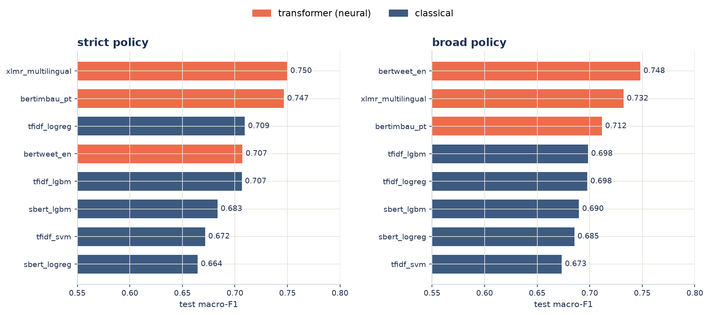
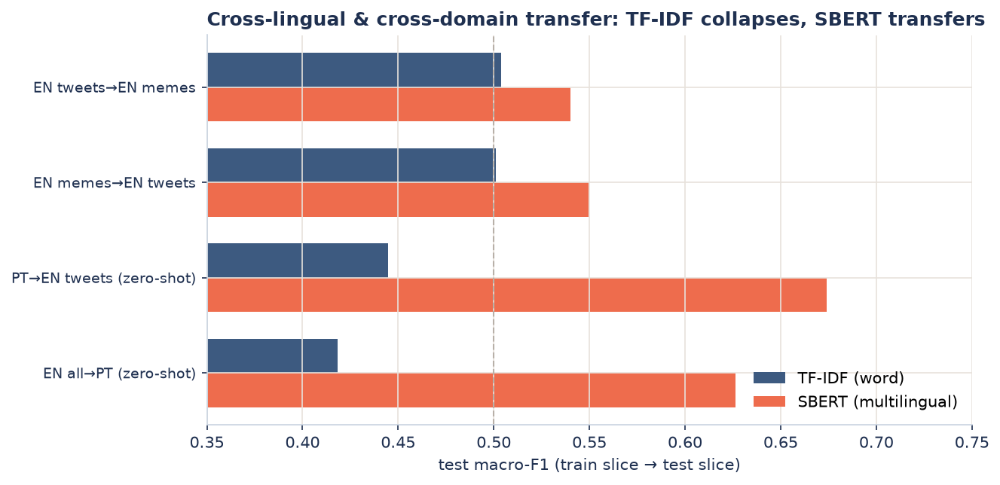

Results¶
All numbers are on the frozen test split, seed 42, reported under two label policies: strict (only explicit hate is positive) and broad (offensive folded into hate).
Beta 2.0 phase 2 (corpus v5, current)¶
Corpus v5 adds two English sources: Vidgen et al. 2021 Dynamically Generated (41,144
synthetic adversarial entries, 54% hate, CC BY 4.0) and HateXplain (20,148 Twitter+Gab
posts with a native 3-way label, MIT; 919 three-way ties dropped). Both are commercially
licensed. 113,826 rows strict after deduplication, frozen split 81,304 / 16,261 / 16,261
(hash 9bfda377058d); hate prevalence rose from 8% to 28.8%. The dataset's own
original/perturbation links (acl.id.matched) are merged into the duplicate clusters
before the group split, so no pair straddles splits. Feature ceiling raised to 150k per
block after a validation-only capacity sweep (the corpus doubled).
v5 test numbers are not comparable to v4: the v5 test contains 5,871 adversarial synthetic examples (36% of the split) written specifically to fool classifiers.
| Model (strict, test v5) | ROC-AUC | macro-F1 | Recall on hate | ECE |
|---|---|---|---|---|
| Stacked ensemble (3x TF-IDF) | 0.8875 | 0.7906 | 0.7359 | 0.0625 |
| tfidf_logreg | 0.884 | 0.788 | 0.707 | — |
| tfidf_lgbm | 0.870 | 0.773 | 0.715 | — |
| tfidf_svm | 0.855 | 0.768 | 0.679 | — |
Recall on hate jumped from 0.55 to 0.74, the most product-visible effect of v5. On the real-text portion of the test (excluding the synthetic source) the stack scores 0.8705. Per-source: HateXplain 0.880, ToLD-Br 0.869, HateBR 0.863, Vidgen 0.810, Fortuna 0.762, EN tweets 0.730. The 60k new EN rows diluted Portuguese relative to v4; a language-balanced training variant recovers PT (HateBR val 0.872 -> 0.895) at the cost of 0.006 global AUC — an open product decision, recorded in the methodology log.
Slices: the aggregate hides the language gap¶
The 0.74 headline is an average over a test split that is 71% English. Split by language,
the same model behaves like two different products
(reports/tables/stack_slices_v5_strict.csv):
| Slice | n | macro-F1 | Recall on hate |
|---|---|---|---|
| English | 11,513 | 0.7712 | 0.7757 |
| Portuguese | 4,748 | 0.6966 | 0.3162 |
| Adversarial (Vidgen) | 5,871 | 0.7199 | 0.8182 |
| Non-adversarial | 10,390 | 0.7558 | 0.5686 |
In Portuguese the model recovers under a third of the hate it is shown. The cause is measured and it is not the method: 59% of the Portuguese false negatives score below 0.10, which is a coverage failure rather than a threshold one. Of the eight corpus sources, the three permissively licensed ones are all English; the four Portuguese ones are restrictive or of indeterminate licence. The same missing asset caps both the Portuguese recall and what may be granted downstream.
No aggregate figure anywhere in this repository should be read without this table. A language-dedicated Portuguese model doubled recall on the slice but tripled identity false positives and was barred by the bias gate — see Identity-term bias.
Negative results this phase: a HurtLex affective-lexicon block (36 dims, EN+PT) adds nothing, either stacked into the features or as a fourth ensemble member; HurtLex is CC BY-NC-SA (non-commercial), so it stays out of any product model regardless. SBERT members have not been re-trained on v5 (Colab pending); on v4 they added 0.009 AUC.
Beta 2.0 (corpus v4, archived)¶
Beta 2.0 follows Gandhi et al. (2024), Expert Systems (doi:10.1111/exsy.13562): stacked ensembles and affective-lexicon features carry documented gains, and text-only models collapse on meme OCR. Corpus v4 = v3 (six sources) with the meme-OCR source demoted to an external test set after its per-source ROC-AUC measured 0.547 (random). 53,540 rows strict after deduplication, frozen split 38,241 / 7,650 / 7,649, leakage gate green.
| Model (strict, test) | ROC-AUC | macro-F1 | Recall on hate | ECE |
|---|---|---|---|---|
| Stacked ensemble (served) | 0.877 | 0.711 | 0.548 | 0.044 |
| tfidf_logreg | 0.873 | 0.702 | 0.481 | — |
| tfidf_lgbm | 0.860 | 0.707 | 0.497 | — |
| tfidf_svm | 0.855 | 0.695 | 0.521 | — |
| Stack + SBERT members (not served) | 0.886 | 0.715 | 0.511 | 0.043 |
The served stack is a meta logistic regression over the three TF-IDF models; meta weights, decision threshold and Platt calibration are all fit on validation only, and the test split is touched once per composition. 15 MB, ~34 ms per text on CPU. The five-member stack adds 0.009 AUC but requires the 470 MB SBERT encoder, which does not fit the deployment budget.
Per-source ROC-AUC of the served stack: HateBR 0.912, ToLD-Br 0.906, EN tweets 0.829, Fortuna 0.746. Portuguese is now the model's strongest language; the remaining AUC is lost on the EN tweets source and on Fortuna's subjective label boundary.
Broad policy: served stack macro-F1 0.758, ROC-AUC 0.848 (best classical single: tfidf_logreg 0.758 / 0.845).
v1 study (original corpus, archived)¶
Everything below was measured on the original 4-dataset corpus, before HateBR, ToLD-Br and the meme-OCR demotion. The transformers have not been re-run on corpus v4 (Colab GPU pending), so these numbers describe that corpus, not the current one.
Model comparison¶

Test macro-F1 by model and policy. Transformers (coral) top both policies.
| Policy | Best transformer | Best classical | Δ | McNemar + Holm |
|---|---|---|---|---|
| strict | XLM-R · 0.750 | tfidf_logreg · 0.709 | +0.041 | p = 0.003 |
| broad | BERTweet · 0.748 | tfidf_lgbm · 0.698 | +0.050 | p < 0.001 |
The transformer advantage is statistically significant, not an artifact of one split. BERTimbau (PT) reaches recall-on-hate 0.796 in strict on correctly decoded Portuguese.
Cross-lingual and cross-domain transfer¶

| Experiment (broad) | TF-IDF (word) | SBERT (multilingual) |
|---|---|---|
| EN to PT (zero-shot) | 0.418 | 0.626 |
| PT to EN (zero-shot) | 0.445 | 0.674 |
| tweets to memes (cross-domain) | 0.504 | 0.540 |
| memes to tweets (cross-domain) | 0.501 | 0.550 |
TF-IDF word features share no vocabulary across languages, so cross-lingual recall on hate falls to near zero; multilingual embeddings place EN and PT in one space and transfer.
Calibration¶
The served score should be interpretable as a probability. Best-calibrated models are
sbert_lgbm (ECE 0.032 strict, 0.056 broad) and the conservative tfidf_svm; the
transformers win on macro-F1 but not on calibration. This trade-off carries into the
product decision.
Identity-term bias¶
An unintended-bias probe measures the false-positive rate on non-hate text that merely mentions an identity group (neutral terms, bilingual). Over-flagging is real across all models. Sexual-orientation mentions reach a false-positive rate of 0.75 vs. 0.17 background for TF-IDF. The transformers show the smallest gaps (~0.26).
Error analysis¶
For the best model, implicit hate (hateful text with no profanity token) is the largest false-negative bucket. XLM-R reduces it (183 vs. 206 for the best classical), consistent with a contextual model catching subtler hate; it over-flags slur-bearing non-hate slightly more. Portuguese is over-flagged relative to English (a higher false-positive rate).
Why the linear model is competitive¶
The best classical model (tfidf_logreg, 0.709 strict) sits about four points below the best
transformer, which is close for a bag-of-words model. Hate detection in this corpus is largely
lexical. The top-weighted word features of tfidf_logreg are explicit slurs and identity-attack
terms in both languages, and 19 of the 50 highest weights are character n-grams that absorb
spelling and obfuscation. Within the classical family, McNemar (Holm) places tfidf_logreg above
tfidf_lgbm in strict and level in broad, and the linear SVM below both because its scores rank
worse (AUC 0.772 vs. 0.841). A linear model over sparse word and character features is near the
ceiling for this signal. The transformer edge comes from context and cross-lingual transfer, not
from the explicit cases the linear model already gets.
Stop-word ablation¶
Removing bilingual stop words (prepositions, pronouns, articles; negations kept) from the TF-IDF word features and retraining does not move the classical models. macro-F1 shifts by −0.009 to +0.005 across six model-by-policy runs, inside the confidence interval, and ROC-AUC is essentially unchanged. Character n-grams and IDF already down-weight function words, so removing them is redundant. The preprocessing was left unchanged. The live demo shows this as an interactive heatmap.
Surface plus semantic ensemble¶
Averaging the classical model (surface, lexical) with the best transformer (semantic) does not raise macro-F1, which is already at the data ceiling. It raises the number that matters ethically.
| Policy | Best single | Ensemble | Hate recall (single → ensemble) |
|---|---|---|---|
| strict | XLM-R 0.749 | 0.748 | 0.55 → 0.63 |
| broad | BERTweet 0.750 | 0.754 | 0.61 → 0.65 |
The classical model catches explicit hate by threshold, the transformer catches implicit hate, and the combination recovers part of the implicit false negatives, with higher AUC on both policies.
Tabular foundation model (TabPFN)¶
TabPFN was run over dense features, on the full training sample on GPU, against LightGBM and LogReg on the same features. The dense features are multilingual SBERT and TF-IDF reduced to 300 dimensions by SVD.
| Features | TabPFN (strict / broad) | LightGBM | LogReg |
|---|---|---|---|
| SBERT | 0.684 / 0.699 | 0.675 / 0.681 | 0.638 / 0.685 |
| TF-IDF → SVD(300) | 0.676 / 0.691 | 0.671 / 0.664 | 0.670 / 0.686 |
TabPFN is the strongest classifier on dense features, beating LightGBM and LogReg on both feature sets and both policies. It ties the best classical model (McNemar not significant, p = 0.22 strict and p = 0.70 broad) and stays below the sparse TF-IDF baseline and the transformers. Dense compression drops the rare surface tokens that carry the signal, so the bottleneck is the representation, not the classifier.
Multi-seed confidence intervals
Results shown are single-seed (42). Re-running the transformers over seeds 42/43/44
and calling hsc report produces leaderboard_agg.csv with mean ± std per model.